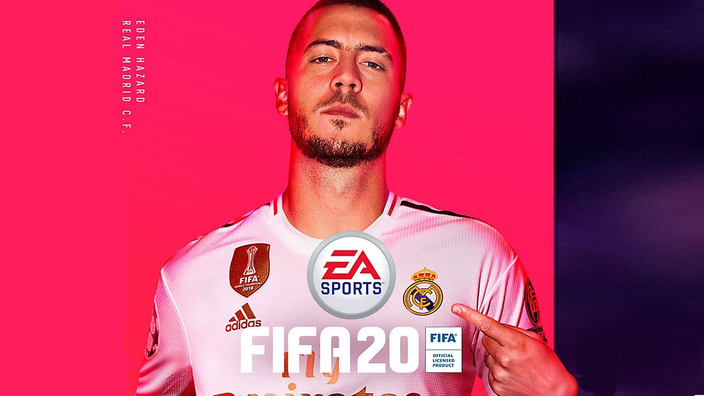

GameLink
Sobre nós
GameLink é um site que trás noticías sobre o mundo dos games e tecnologa
A GameLink começou como um projeto pessoal de infancia o qual era chamado de Linking Games - um site de noticías. Hoje a GameLink continua sendo um projeto pessoal, mas também esta sendo usado para projetos universitarios.

O site teve como espiração de Desing o Material Desing.
Material Design (codinomeado Quantum Paper) é uma linguagem de design desenvolvida pela Google. Uma melhoria nos "card" que estrearam no Google Now, o Material Design faz um uso mais liberal de layouts baseados em grids, animações e transições responsivas, preenchimentos, e efeitos de profundidade como luzes e sombras.
designer Matías Duarte explicou que "diferente do papel real, o nosso material digital pode se expandir e se modificar de forma inteligente. O Material tem bordas e superfícies físicas. Costuras e sombras dão um sentido com o que você pode tocar." A Google afirma que a sua nova linguagem de design é baseada em papel e tinta.
Fonte do texto Wikipédia.
O site é Responsivo ou seja se ajusta a diferentes tamanhos de tela de acordo com sua resolução. Nos exemplos a baixo podemos ver a versão mobile, tablet e desktop.


Shopping

Nosso site trás também uma sessão de compras, onde você pode comprar consoles, acessorios e jogos diretamente de nosso site após um rapido registro de usuário (Nota a setor de vendas é totalemnte ficticio, feito somente para estudos de banco de dados).
Noticías

Na sessão noticías você pode ficar por dentro do que esta acontecendo no mundo dos jogos, campeonatos, lançamentos, reviews, noticías das suas empresas favoritas.
Você pode ainda filtrar o conteudo clicando em umas das abas no menu, onde você pode escolher qual plataforma de games lhe agrada mais.